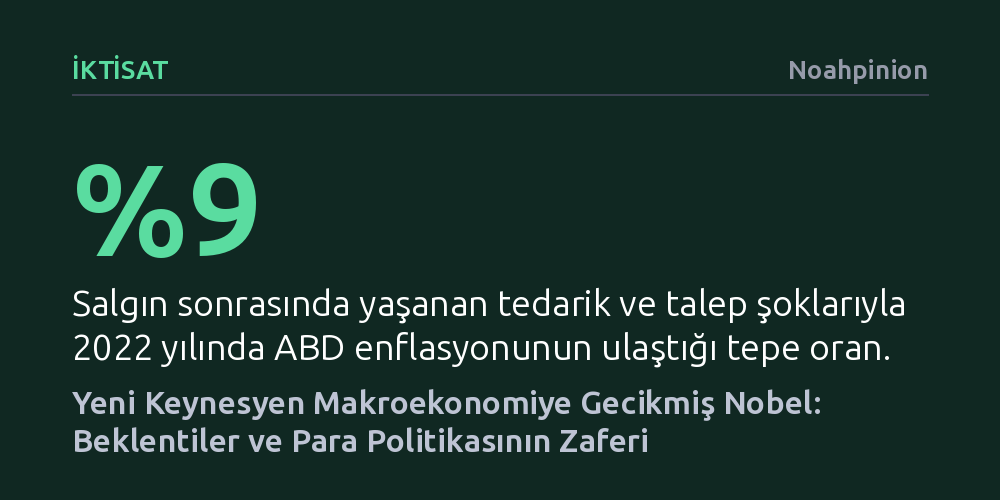

IKTISAT · Noahpinion · 2026-10-14
2026 Nobel Ekonomi Ödülü, para politikasının ve geleceğe dönük beklentilerin reel ekonomiyi nasıl şekillendirdiğini gösteren Yeni Keynesyen iktisadın mimarları Robert Hall ve Michael Woodford'a verildi. Teori, salgın sonrası enflasyonun işsizlik patlamadan düşürülmesiyle en büyük pratik sınavını başarıyla verdi.
Enflasyonla mücadelenin kaçınılmaz olarak kitlesel işsizlik ve acı reçeteler gerektirmediğini, merkez bankasının kararlılığı ile doğru yönetilen beklentilerin ekonomiyi tek başına dengeleyebileceğini gösterir.

İktisat dünyasının en prestijli takdiri olan Nobel Ödülü, bu yıl Yeni Keynesyen makroekonominin iki öncü kurucusu Robert Hall ve Michael Woodford'a verildi. Modern merkez bankacılığının temel teorik omurgasını oluşturan bu çerçevenin bugüne dek ödüllendirilmemiş olması iktisat camiasında uzun süredir önemli bir eksiklik olarak değerlendiriliyordu. Bu teorinin temelleri, 1970'li yıllarda yaşanan stagflasyon krizine dayanıyor. O dönemde enflasyon ile işsizlik arasındaki basit ters yönlü ilişkiyi gösteren Phillips Eğrisi çökmüş ve iktisatçılar, ekonomi politikalarındaki değişimlerden etkilenmeyecek daha sağlam kuramsal zeminler aramaya başlamıştı.
Bu arayış, makroekonominin bireylerin ve şirketlerin davranışlarını temel alan mikro temeller üzerine inşa edilmesini sağladı. Ancak ilk popüler girişim olan Reel İş Çevrimleri teorisi, ekonomik dalgalanmaları yalnızca teknolojik ilerleme hızındaki iniş çıkışlara bağlayarak para politikasını tamamen etkisiz kabul etti. Teorisinin kurucusu Ed Prescott, para politikasının refah getirmedeki etkisinin "yağmur dansının yağmur yağdırmadaki etkisi kadar" olduğunu iddia edecek kadar ileri gitmişti. Oysa ampirik veriler para politikasının reel ekonomiyi derinden etkilediğini tartışmasız biçimde ortaya koyuyordu; eksik olan, bu etkinin mekanizmasını açıklayan bütüncül bir modeldi.
Yeni Keynesyen düşüncenin ilk büyük yapı taşını Robert Hall 1978 tarihli çığır açıcı makalesiyle koydu. Milton Friedman'ın kalıcı gelir hipotezini test eden Hall, tüketicilerin harcamalarını geleceği öngörerek planladıkları bir dünyada, tüketim düzeyindeki değişimlerin tamamen rassal olması gerektiğini öne sürdü. Çünkü geçen döneme ait bilinen herhangi bir ekonomik gösterge bugünkü tüketimi etkileyebilecek olsaydı, rasyonel bireyler bu bilgiyi zaten geçmişte hesaba katmış ve tüketimlerini çoktan ayarlamış olurlardı. Hall'un ampirik bulguları da geçmiş gelirin gelecekteki tüketim değişimlerini tahmin etmede işe yaramadığını kanıtladı.
Bu tespit, ekonomi politikası açısından devrim niteliğinde bir sonuç doğurdu: Tüketiciler ve işletmeler en az iktisatçılar kadar geleceği hesaplayabilen ve ekonominin işleyiş mantığını kavrayabilen aktörlerdi. Dolayısıyla politika yapıcıların piyasaları sistematik sürprizlerle aldatarak ekonomiyi canlandırması mümkün değildi. Bir ekonomi yönetiminin bugünkü tüketim ve yatırım kararlarını etkileyebilmesinin yegane yolu, gelecekte atacağı adımlara dair inandırıcı, şeffaf ve anlaşılır taahhütlerde bulunmasından geçiyordu.
1990'lara gelindiğinde para politikasının reel ekonomiyi nasıl harekete geçirdiğini açıklamak amacıyla çok sayıda iktisatçı zengin bir fikir havuzu oluşturdu. Temel soru şuydu: Toplam talep çöktüğünde şirketler neden üretimi kısmak yerine sadece fiyatları indirip dengeyi koruyamıyordu? Yanıt, piyasalardaki fiyatların anlık olarak ayarlanamadığı fiyat yapışkanlığı gerçeğinde yatıyordu. David Romer, Olivier Blanchard ve Janet Yellen gibi isimlerin katkıda bulunduğu bu dönemde, firmaların fiyatlarını her çeyrekte değil sadece belirli aralıklarla değiştirebildiğini varsayan Calvo fiyatlama modeli öne çıktı.
Sayısız fikrin havada uçuştuğu bu entelektüel birikimi merkez bankalarının günlük operasyonlarında kullanabileceği sade ve uygulanabilir bir modele dönüştüren isim Michael Woodford oldu. Woodford; Calvo'nun fiyat yapışkanlığı varsayımını, Hall'un tüketim dengeleme modelini ve merkez bankasının enflasyon ile istihdamı gözeten faiz kurallarını tek bir tutarlı çerçevede sentezledi. Bu model, merkez bankalarının faizleri düşürerek kısa vadede talebi nasıl canlandırabileceğini, ancak faizleri kalıcı olarak düşük tutarak sonsuz bir refah yaratamayacağını matematiksel olarak izah etti ve dünya genelinde para politikasının ana kılavuzu haline geldi.
Woodford'un Yeni Keynesyen sentezi merkez bankalarının standart pusulası olduktan kısa süre sonra, 2008 küresel finans kriziyle büyük bir engelle karşılaştı. Talepteki çöküş öylesine şiddetliydi ki politika faizlerinin sıfıra kadar indirilmesi bile toparlanmayı sağlayamadı. Bu çıkmazı aşmak üzere üç araç öne çıktı: Merkez bankasının faizleri kriz sonrasında da uzun süre düşük tutacağını taahhüt ettiği sözlü yönlendirme, uzun vadeli tahvilleri satın alarak piyasa faizlerini aşağı çeken parasal genişleme ve hükümetlerin devreye girdiği doğrudan mali canlandırma paketleri.
İlk yıllarında maliye politikasını neredeyse tamamen dışlayıp yalnızca merkez bankalarına odaklanan Yeni Keynesyen iktisatçılar, bu krizle birlikte John Maynard Keynes'in bütçe harcaması anlayışını teorilerine yeniden dahil etti. Robert Hall 2009 tarihli çalışmasında, faizlerin sıfır alt sınırında sıkıştığı olağanüstü dönemlerde kamu harcamaları çarpanının 1,7 seviyesine kadar çıkabileceğini ortaya koydu. Merkez bankasının faiz artıramadığı bir ortamda devletin yaptığı her harcama, özel sektör yatırımlarını dışlamaksızın ekonomik çıktıyı bir dolardan çok daha fazla artırarak canlanmayı hızlandırabiliyordu.
Yeni Keynesyen yaklaşımın en çarpıcı pratik sınavı ve belki de asıl zaferi, salgın sonrası 2021-2023 döneminde yaşandı. Küresel tedarik zinciri krizleri ve harcama şoklarıyla 2022'de yüzde 9 seviyesine tırmanan ABD enflasyonu, Fed'in peş peşe gelen faiz artırımlarının ardından 2023 başında yüzde 3 bandına kadar geriledi. Bu süreçteki asıl olağanüstü gelişme, geçmişteki dezenflasyon deneyimlerinin aksine işsizlik oranlarında ciddi bir artış yaşanmamasıydı.
İktisatçıların kusursuz dezenflasyon olarak nitelendirdiği bu başarı, Paul Volcker'ın 1980'lerin başında enflasyonu ezmek için başvurduğu derin durgunluk ve kitlesel işsizlik reçetesinin kaçınılmaz olmadığını kanıtladı. Merkez bankasının enflasyonla mücadeledeki kararlılığı piyasada inandırıcı bir çıpa oluşturduğunda, işletmeler fiyat artışlarını durdurmuş ve geleceğe dönük beklentiler reel üretim tahrip edilmeden dengelenmiştir. Hall ve Woodford'un kurduğu modellerin öngördüğü beklenti mekanizmasını doğrulayan bu tablo, Yeni Keynesyen makroekonomiye verilen Nobel Ödülü'nün ne kadar hak edilmiş bir tescil olduğunu gösteriyor.